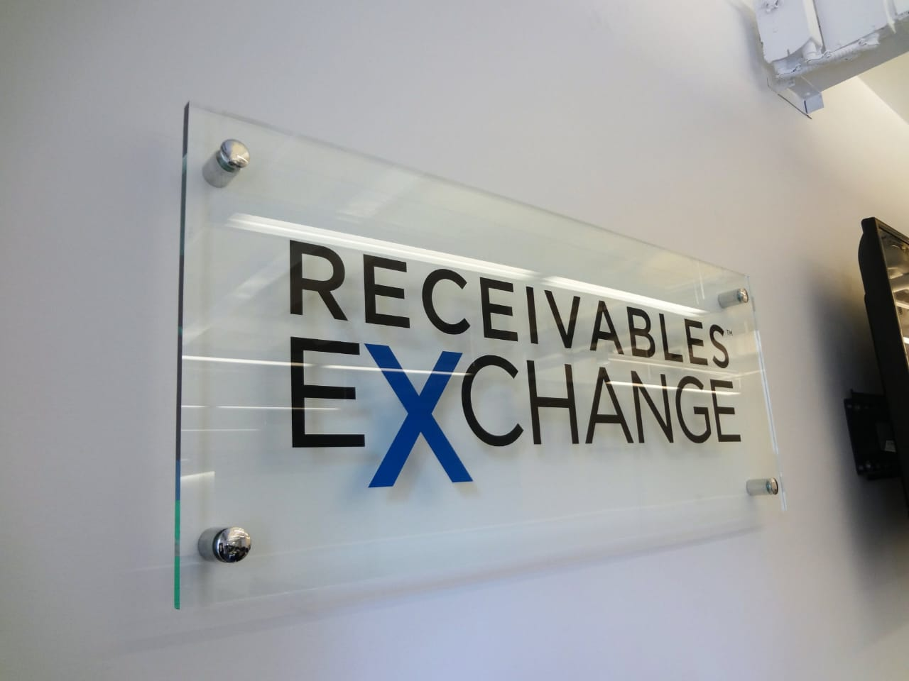

↠Back to Home
🢠Office Acrylic Signage

Office signage made with acrylic boards offers a clean, modern look ideal for professional environments. They can display logos, room names, safety instructions, and directional cues with style and clarity.
✅ Key Features
- Custom logo etching and UV printing
- Elegant, frameless transparent look
- Wall-mounted, door-mounted, or suspended options
- Scratch-resistant and durable finish
📌 Applications
- Department name boards
- Cabin and meeting room labels
- Reception brand displays
- Corporate directory boards